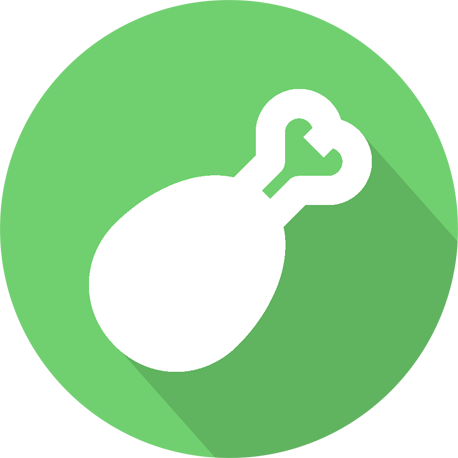

PopAtlas
PublicPlataforma Full Stack de rastreamento de mídia com Spring Security JWT, integração TMDb e PostgreSQL.
Java 21
Spring Boot 3
React
PostgreSQL
FATEC São Paulo • Análise e Desenvolvimento de Sistemas (ADS)
Desenvolvedor de Software focado em soluções robustas de Back-End, microsserviços e engenharia web com Java, PHP (Laravel) e Python.
O portal oficial está passando por uma migração de infraestrutura para novo provedor em nuvem. Enquanto a nova versão é finalizada, todos os códigos-fonte, documentações e arquiteturas estão disponíveis nos repositórios públicos abaixo:
Plataforma Full Stack de rastreamento de mídia com Spring Security JWT, integração TMDb e PostgreSQL.

E-commerce moderno com migração MVC completa, motor de carrinho em sessão e checkout transacional.
Plataforma de livraria com Eloquent ORM avançado (Eager Loading), Blade Templates e integridade relacional.
Automação em nuvem com Google Cloud Client Library para extração paginada de metadados da YouTube API v3.